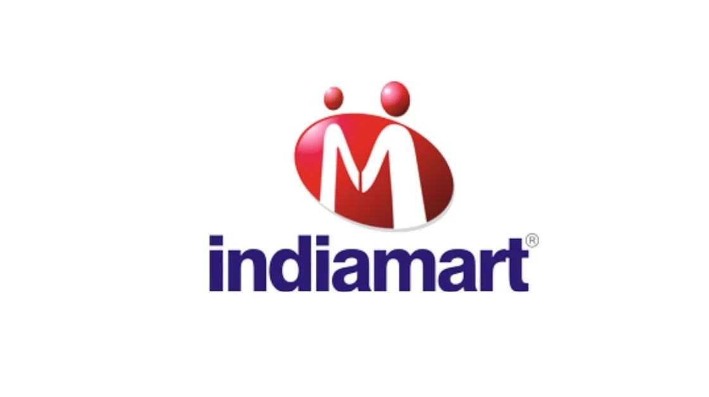

Indiamart TeleAssociate
IndiaMART Recruitment 2022 |Tele Associate |Work From Home | Apply Now!!
Indiamart has announced a job notification for the post of Tele Associate for work from home. A student from Any discipline can apply for Indiamart Recruitment 2022. Interested and eligible candidates can read more details below.

| Indiamart Recruitment 2022 | |||
|---|---|---|---|
| 1 | Company name | Indiamart | |
| 2 | Post Name | Tele Associate | |
| 3 | Salary | 3.6 LPA | |
| 4 | Experience | 0-1 Year | |
| 5 | Job Location | Work From Home | |
Job Description:
▪︎ Study the assigned sellers’ profiles
▪︎ Call the sellers to collect the business-related details and update them in the seller’s catalog
▪︎ Verify the information that is already updated in the profile
▪︎ Educate clients about the benefits of this free service for his business and Answer sellers’ queries
▪︎ Dispose of the cases with appropriate reason codes basis the conversation with the respective sellers
▪︎ Set follow up calls as desired by the sellers
▪︎ Maintain quality results by adhering to standards and guidelines
▪︎ Achieve the daily/Weekly/MonthlyWork for a minimum of 3-4 hours a day.
▪︎ This is complete a NON-SALES profile.
▪︎ Language proficiency Hindi & English (mandatory)
Eligibility Criteria:
Any graduation, or Any PG from any stream
Preferred skill:
▪︎ Program Highlights
• Work From Home
• Work on your own schedule
• Weekly Payout
• Additional incentives for quality and output of your service
• Voice-based calling process and data entry
• NOT a sales program
▪︎ What all you need:
• Computer with Internet
• Android Phone
• Comfortable with Hindi and English
• Regional Language is considered as an Advantage
About Indiamart:
Indiamart is a leader in personal security for consumers. Focused on protecting people, not just devices, McAfee consumer solutions adapt to users’ needs in an always-online world, empowering them to live securely through integrated, intuitive solutions that protect their families and communities with the right security at the right moment.
How to Apply for Indiamart Recruitment 2022?
▪︎ Interested and Eligible candidates can apply for this drive online by scrolling down and clicking on Apply HERE.